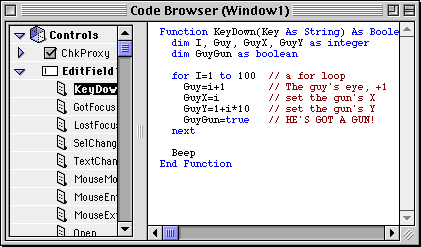

In general, you'll never use the color palette (though it is super-nifty), and you'll only use the Tools and Properties toolbars when you're laying out an interface. When you're writing code, these windows are pointless. However, much to my dismay, many people simply never close these windows!
So, the tip is to keep these windows closed whenever you're not doing layout. You'll get a lot more screen space, and RB will run faster (the properties palette takes a long time to refresh).
To be even MORE super-effecient with your workspace, make a macro that closes and opens all the toolbars with a single keystroke.
Many, many people give all their variables names that are entirely lowercase, such as "sout, temp, i", and so on. Many more people don't leave blank space in their code, and put comments at the end of lines without aligning them. This is downright ugly!
So, when you're writing code, capitalize letters in variables that are the start of words. For example, if the variable binval is a binary value, name it BinVal. This just looks better.
And be sure to put in blank lines at points where the code is broken into sections. This makes it much clearer, and easier to read. Take these examples...
The bad
All the declarations are on a long line, and are all in lower case. There isn't any blank space, and the comments are randomly strewn about the line.
The good

The variables are logically grouped, and have the correct case. There is blank space seperating the groups of code. The comments are lined up, and look very nice.This makes going back and editing it later much easier, and it makes it easier for others to read as well.